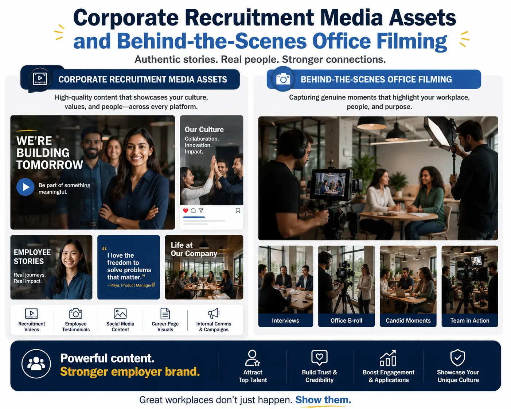
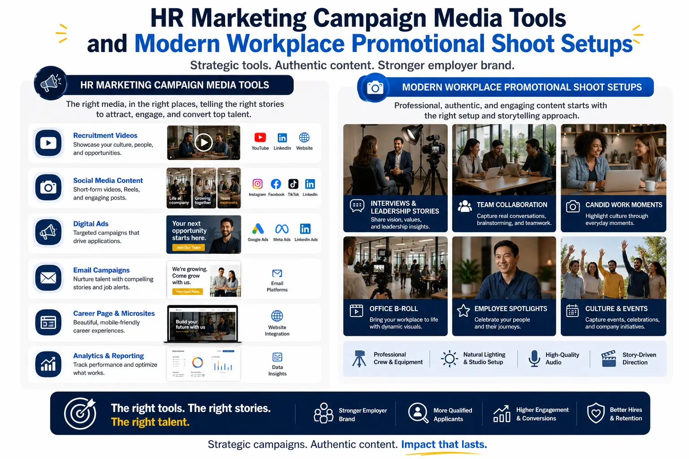

Why Premium Employer Branding Videos Outperform Traditional Recruitment Ads
The Shift in Talent Acquisition
In today's highly competitive recruitment market, attracting elite professionals requires more than posting standard job listings or offering competitive salary structures. The modern workforce—especially top-tier engineers, designers, and managers—evaluates potential employers based on workplace culture, core values, and collaborative energy. To stand out, forward-thinking organizations are shifting from transactional recruitment ads toward professional Employer Branding Video Production.
Text-based job descriptions fail to convey the dynamic, everyday culture of a workplace. When companies show their office life through high-quality Corporate Workplace Culture Visuals, they let candidates experience the workspace, team interactions, and leadership style before they apply. This transparency builds trust and helps attract candidates who align with the organization's mission.
By sharing employee stories, office collaborations, and project milestones, brands can convert standard job listings into engaging career pathways.
The Limits of Traditional Recruitment Ads
Relying exclusively on standard text postings or static flyers can create several bottlenecks for growing companies:
- Dry and Unengaging Content. Bullet-pointed lists of requirements fail to capture the energy, challenges, and collaborative nature of a modern workplace.
- Lack of Cultural Transparency. Candidates are often skeptical of generic stock images and written testimonials, preferring authentic views of the actual workspace.
- Weak Competitive Differentiation. Text ads look identical across competitors, making it difficult for your company to stand out to prospective candidates.
- Higher Candidate Drop-Off Rates. Without an engaging story or visual connection to the team, candidates are less likely to complete long application processes.
Authentic Culture Display
Investing in professional Employer Branding Video Production lets you showcase the actual workspace, team collaborations, and company culture, building trust.
Real Team Interactions
Using Corporate Workplace Culture Visuals helps candidates visualize their place in the team, lowering anxiety and boosting application quality.
High-Performance Assets
Creating custom Corporate recruitment media assets provides your HR team with high-impact visuals for LinkedIn outreach, careers pages, and job boards.
Unscripted Transparency
Conducting behind-the-scenes office filming captures the genuine workspace environment, avoiding over-polished, staged corporate setups.

Structuring and Filming Your Workplace Culture
Producing high-impact culture videos requires a balance of pre-production planning, creative direction, and professional videography rules:
- Rule 1: Focus on attracting elite talent with video storytelling. When attracting elite talent with video, center your content on employee growth journeys, collaborative projects, and shared values. Avoid long management speeches and focus on the developers, creators, and builders who make up the heart of your company.
- Rule 2: Deploy modern HR marketing campaign media tools. Integrate your video assets into a structured marketing setup. Use HR marketing campaign media tools to slice your main video into shorter testimonials for LinkedIn, careers pages, and recruiter outreach emails.
- Rule 3: Use team-centric corporate videography techniques. Emphasize collaboration by using team-centric corporate videography. Record active brainstorms, daily scrums, and social events to highlight team chemistry and support systems.
- Rule 4: Organize a professional modern workplace promotional shoot. Plan a structured modern workplace promotional shoot. Set up professional lighting, high-grade audio capture, and multi-angle camera arrays to ensure corporate visuals match standard commercial marketing quality.
- Rule 5: Keep interviews conversational and unscripted. Avoid scripted responses that sound artificial. Ask open-ended questions about challenges, team support, and learning opportunities to capture authentic employee responses.
- Rule 6: Showcase the physical and remote environment. Show the physical benefits of your workspace: ergonomic desks, collaborative lounges, and recreational spaces. If your team is remote-friendly, share snippets of online collaboration to highlight remote team synergy.
Integrating Video Assets into Your Recruitment Strategy
Deploying your video assets across key talent touchpoints is essential to maximize candidate engagement:
LinkedIn Outreach & Social Media
- Share 30-60 second employee highlight clips in job postings to increase click-through rates.
- Have leadership post behind-the-scenes stories to build executive authority.
- Encourage team members to share the culture video to expand organic reach.
- Use targeted recruitment campaigns on social platforms to reach passive candidates.
Careers Page & Job Board Integration
- Embed the primary culture showcase video above the fold on your careers page.
- Place specific team testimonials alongside corresponding open job listings.
- Ensure video players are optimized to load fast on mobile devices.
- Include clear call-to-actions (such as 'Apply Now') directly next to the video.
Candidate Onboarding & Offer Stages
- Send team welcome videos to candidates who receive job offers to build excitement.
- Use team introduction reels during the onboarding process to welcome new hires.
- Provide virtual office tours to remote hires to help them feel connected from day one.
- Share department highlight reels to prepare new hires for their specific roles.
Improving Candidate Engagement and Conversion Rates
An authentic, professionally produced branding video does more than fill open roles; it builds long-term talent pipelines and strengthens your market authority.
By focusing on Employer Branding Video Production, companies can showcase their values, culture, and projects, which helps reduce cost-per-hire and attract better-aligned candidates.
Additionally, sharing Corporate Workplace Culture Visuals helps candidates understand the day-to-day work environment, which can improve candidate engagement and retention rates.

Conclusion
Premium employer branding videos are the single most effective tool to attract elite talent in today’s competitive market. By investing in Employer Branding Video Production and capturing high-quality Corporate Workplace Culture Visuals, brands can share the authentic story of their workspace.
Through structured Corporate recruitment media assets, unscripted behind-the-scenes office filming, and team spotlights, you can build a strong recruitment pipeline.
At The PhD Ads in Madurai, we produce premium corporate video campaigns, manage your team-centric corporate videography shoots, and set up your modern workplace promotional shoot to help you build elite teams.
Key Topics
Attract Elite Talent to Your Organization
Ready to showcase your company culture and build an elite team? At The PhD Ads in Madurai, we film authentic office culture videos, employee testimonials, and recruiting reels to help you stand out.
Email: team@e2o.in